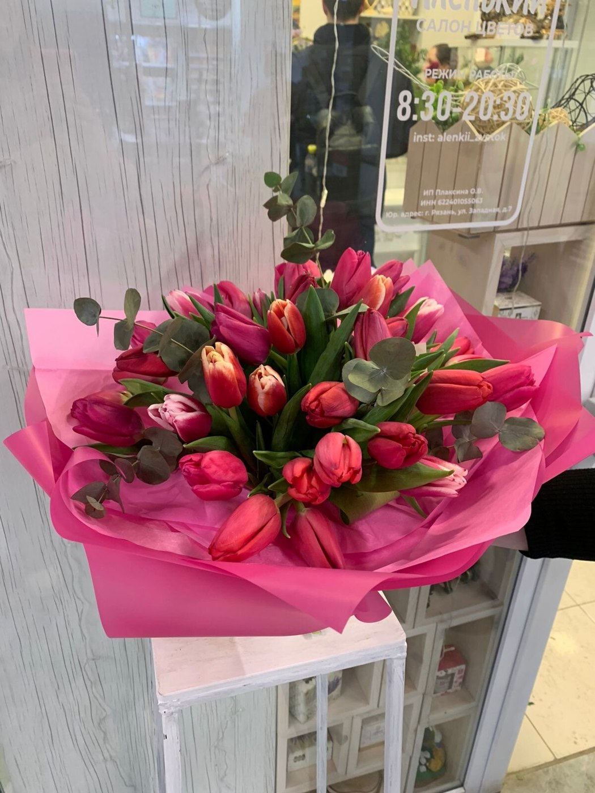
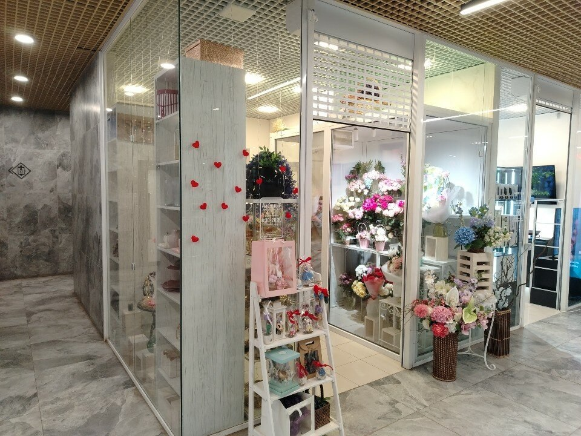

Выбор цветов
Обсудите повод, состав и бюджет по телефону.
Стоимость уточняйтеАленький цветок · Рязань
Цветочный салон на Пролетарской, 17. Для тех, кого хочется порадовать.
Рязань, Пролетарская ул., 17, этаж 1 · Ежедневно, 08:30–20:30

У каждой истории три страницы
Выберите настроение
Вспомните любимые цветы и оттенки человека, которому дарите букет.
Выберите своё настроение
Подберём вариант под повод и бюджет. Свяжитесь с магазином, чтобы узнать актуальное предложение.
Опишите повод, любимые цветы и комфортный бюджет. Доступные варианты и итоговую стоимость магазин подскажет перед заказом.
Публичный прайс в карточке магазина не опубликован. Уточните цены и наличие по телефону.
Узнать стоимость ↗Цена относится только к указанному товару и его описанию. Если количество не указано, уточните единицу продажи у магазина. Сведения проверены 10.11.2026. Цены и ассортимент могут измениться. Прайс на Яндекс Картах ↗
Больше, чем цветы
Выберите, что нужно для вашего случая. Детали заказа и стоимость согласуйте с магазином.
Обсудите повод, состав и бюджет по телефону.
Стоимость уточняйте
Будем знакомы
Цветочный салон на Пролетарской, 17. Для тех, кого хочется порадовать.
Расскажите, кого хотите порадовать, какие оттенки вам нравятся и какой бюджет вы планируете. Состав, упаковку и время получения обсудите с сотрудниками.
Поближе к красоте
Загляните в магазин и найдите настроение для следующего заказа.
Фотографии из карточки магазина на Яндекс Картах. Это примеры работ и атмосферы; текущее наличие уточняйте.
Опыт покупателей
4,5 из 5 · 15 оценок на Яндекс Картах.
Ниже — краткие пересказы выбранных отзывов со ссылками на оригиналы.
Постоянная покупательница благодарит за помощь со срочными букетами и быструю доставку.
Покупатель остался недоволен стойкостью купленных цветов.
Автор положительно оценивает обслуживание и предлагает улучшить оплату картой.
Покупатель хвалит современное оформление букета и рекомендации владелицы по уходу.
Перед заказом
Позвоните по указанному номеру и обсудите с магазином состав, бюджет и время получения. Заказ считается согласованным после подтверждения сотрудником.
Фотографии показывают примеры из карточки магазина. Сезонность и наличие могут влиять на состав. Попросите подтвердить цветы и упаковку перед заказом.
Цены взяты из опубликованного прайса на дату проверки. Итог зависит от выбранного состава, размера, упаковки и доставки. Подтвердите стоимость у магазина до оплаты.
Рязань, Пролетарская ул., 17, этаж 1. Используйте кнопку «Построить маршрут» ниже. Режим работы: Ежедневно, 08:30–20:30.
До встречи
Рязань, Пролетарская ул., 17, этаж 1
Ежедневно, 08:30–20:30